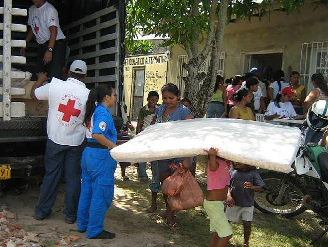
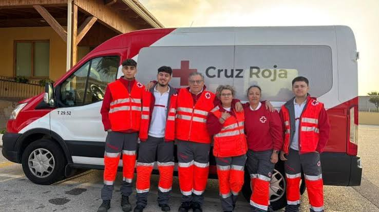

En RAS (Red de Asistencia Solidaria) creemos en el poder de la empatía y la acción conjunta. Trabajamos día a día para acompañar a personas en situación de vulnerabilidad, brindando apoyo alimentario, contención social e impulsando campañas solidarias que transforman realidades.
Nuestro compromiso se enfoca en dos pilares fundamentales:

Organizamos campañas solidarias para recolectar ropa, alimentos no perecederos y recursos básicos. Estas donaciones son clasificadas y distribuidas entre familias que atraviesan situaciones económicas difíciles, priorizando a niños, adultos mayores y personas en riesgo social.
Brindamos acompañamiento social a personas que necesitan orientación para mejorar su calidad de vida. Esto incluye asesoramiento, contención emocional y apoyo en la búsqueda de empleo, facilitando herramientas que permitan una inserción más efectiva en la sociedad. Nuestro objetivo es no solo asistir en el presente, sino también generar oportunidades que permitan a las personas construir un futuro más digno.
